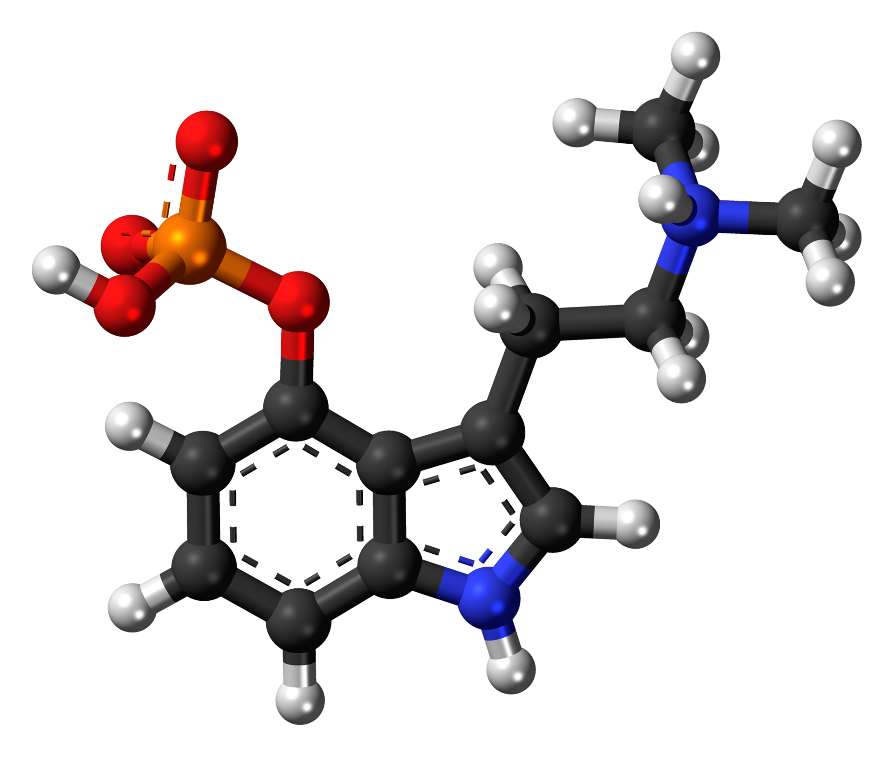

What is it?
Is a naturally occurring psychedelic prodrug compound produced by more than 200 species of fungus. The most potent are members of the genus Psilocybe, such as P. azurescens, P. semilanceata, and P. cyanescens, but psilocybin has also been isolated from about a dozen other genera. As a prodrug, psilocybin is quickly converted by the body to psilocin, which has mind-altering effects similar, in some aspects, to those of LSD, mescaline, and DMT. In general, the effects include euphoria, visual and mental hallucinations, changes in perception, a distorted sense of time, and spiritual experiences, and can also include possible adverse reactions such as nausea and panic attacks.
Effects
The intensity and duration of the effects of psilocybin are variable, depending on species or cultivar of mushrooms, dosage, individual physiology, and set and setting, as was shown in experiments led by Timothy Leary at Harvard University in the early 1960s. Once ingested, psilocybin is rapidly metabolized to psilocin, which then acts on serotonin receptors in the brain.
The mind-altering effects of psilocybin typically last from two to six hours, although to individuals under the influence of psilocybin, the effects may seem to last much longer, since the drug can distort the perception of time. Psilocybin has a low toxicity and a low harm potential. Possession of psilocybin-containing mushrooms has been outlawed in most countries, and it has been classified as a scheduled drug by many national drug laws.
Top Researchers
Spiritual Uses
Psilocybin mushrooms have been and continue to be used in indigenous New World cultures in religious, divinatory, or spiritual contexts. Reflecting the meaning of the word entheogen ("the god within"), the mushrooms are revered as powerful spiritual sacraments that provide access to sacred worlds. Typically used in small group community settings, they enhance group cohesion and reaffirm traditional values. Terence McKenna documented the worldwide practices of psilocybin mushroom usage as part of a cultural ethos relating to the Earth and mysteries of nature, and suggested that mushrooms enhanced self-awareness and a sense of contact with a "Transcendent Other"—reflecting a deeper understanding of our connectedness with nature.